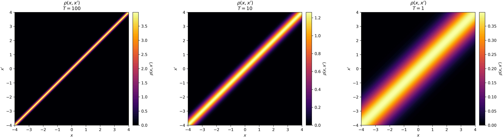
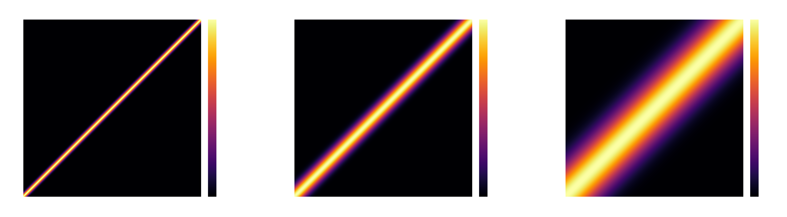

For classical particles in thermal equilibrium, the Boltzmann distribution governs the spread of their energies. The probability of finding the system in a specific state \(n\) with energy \(E_n\) is proportional to the Boltzmann factor, \(e^{-\beta E_n}\).
On the other hand, quantum mechanics tells us that, according to the Born rule, the conditional probability density of finding a particle in a specific position \(x\), given that it is in quantum state \(n\), is the squared modulus of its wave function:
$$P(x|n) = |\psi_n(x)|^2 = \psi_n(x)\psi^*_n(x)$$By merging these two seemingly incompatible descriptions—classical thermal statistics and quantum wave mechanics—we can unlock profound insights into a bizarre state of matter: the Bose-Einstein Condensate (BEC).
On our journey there, we will uncover a deep connection between statistical mechanics and combinatorics, demonstrating how these seemingly distant mathematical concepts weave together to perfectly describe the quantum world.
The Density Matrix
Let's start by combining these two concepts to build a joint probability density using standard probability rules (ignoring normalization constants for a moment):
$$P(n, x) = P(n) \times P(x|n) \propto e^{-\beta E_n} \psi_n(x)\psi^*_n(x)$$In general, the energy levels (eigenvalues) and wave functions (eigenstates) of a quantum system can be exceedingly difficult to calculate explicitly. However, if we only care about the position \(x\), we can calculate the marginal probability density \(P(x)\) by summing over all possible energy states \(n\):
$$P(x) \propto \rho(x, x, \beta) = \sum_n e^{-\beta E_n} \psi_n(x)\psi^*_n(x)$$This summation leads us to the diagonal elements of what is known as the (thermal) density matrix, denoted by \(\rho\). But this object is richer than a simple marginal probability. If we introduce a second, distinct position variable \(x' \neq x\), the expression \(\psi_n(x)\psi_n^*(x')\) is generally a complex number, not a physical probability.
These off-diagonal elements, \(\rho(x, x', \beta)\), are known as interference terms and encode spatial phase correlations. They give us deep insights into the quantum mechanical properties of the system. Specifically, they tell us how two positions of a particle in a superposition of being located at \(x\) and \(x'\) are capable of interfering with one another.
If an off-diagonal element approaches zero, it means that the phase correlation between those two points has been destroyed (usually by thermal noise). This makes physical sense when we look at the temperature dependence. The thermodynamic beta is defined as \(\beta = \frac{1}{k_B T}\). At high temperatures \(T\) (small \(\beta\)), a massive number of excited energy states become thermally accessible. Summing over these wave functions causes destructive interference, washing out the off-diagonal terms and leaving us with classical thermal chaos.
The Free Particle Density Matrix
To better understand and visualize the meaning of the density matrix, it is useful to consider the simplest example: a free particle moving in an infinite one-dimensional space.
For a free particle, energy levels are not quantized into discrete steps. Instead, the particle can possess any continuous momentum \(p\), meaning we must integrate over all possible momenta rather than sum over discrete states:
$$ \rho(x, x') = \int_{-\infty}^{\infty} dp \, e^{-\beta E_p} \psi_p(x)\psi_p^*(x') $$The energy eigenvalue \(E_p = \frac{p^2}{2m}\) depends only on the momentum \(p\) and mass \(m\), with corresponding position-space wave functions given by plane waves:
$$\psi_p(x) = \frac{1}{\sqrt{2\pi\hbar}} e^{i p x / \hbar}$$Substituting these into the density matrix definition, we obtain:
$$\rho(x, x') = \int_{-\infty}^{\infty} dp \, e^{-\beta \frac{p^2}{2m}} \left( \frac{1}{\sqrt{2\pi\hbar}} e^{i p x / \hbar} \right) \left( \frac{1}{\sqrt{2\pi\hbar}} e^{-i p x' / \hbar} \right)$$Derivation details
The derivation relies on algebraic simplifications and a well-known Gaussian integral.
After pulling out the constants and combining the exponents, we get:
$$\rho(x, x') = \frac{1}{2\pi\hbar} \int_{-\infty}^{\infty} dp \, e^{ -\frac{\beta}{2m} p^2 + \frac{i(x - x')}{\hbar} p }$$We recognize a familiar Gaussian integral over the momentum \(p\), which we can evaluate easily using the standard formula:
$$\int_{-\infty}^{\infty} e^{-A p^2 + B p} dp = \sqrt{\frac{\pi}{A}} e^{B^2 / 4A}$$By matching the terms, we identify our constants \(A\) and \(B\):
$$\sqrt{\frac{\pi}{A}} = \sqrt{\frac{2m\pi}{\beta}}$$And the exponent term becomes:
$$\frac{B^2}{4A} = \frac{\left( \frac{i(x - x')}{\hbar} \right)^2}{4 \left( \frac{\beta}{2m} \right)} = \frac{-\frac{(x - x')^2}{\hbar^2}}{\frac{2\beta}{m}} = - \frac{m}{2\beta\hbar^2} (x - x')^2$$Finally, we multiply by the \(\frac{1}{2\pi\hbar}\) constant from our simplified integral expression:
$$\rho(x, x') = \frac{1}{2\pi\hbar} \sqrt{\frac{2m\pi}{\beta}} e^{ - \frac{m}{2\beta\hbar^2} (x - x')^2 }$$By simplifying the prefactor and recalling that \(\beta = \frac{1}{k_B T}\), we arrive at the final expression for the free particle density matrix.
Now, let's take a look at the diagonal elements where \(x = x'\). The distance term in the exponent vanishes to \(0\), collapsing the matrix to a constant:
$$ \rho(x, x) = \sqrt{\frac{m k_B T}{2\pi \hbar^2}} $$Interestingly, the result does not depend on \(x\), which means that the particle is equally likely to be found anywhere.
More generally, the off-diagonal elements follow a Gaussian decay governed by the temperature \(T\) and the spatial separation \((x - x')\). In the quantum limit, as \(T\) approaches absolute zero, we can move \(x\) and \(x'\) far apart while the exponential term remains close to \(1\). The Gaussian broadens out, meaning the particle's quantum wave function smears across space, maintaining phase coherence over macroscopic distances. We can observe this phenomenon visually in the graphs below as temperature decreases.

